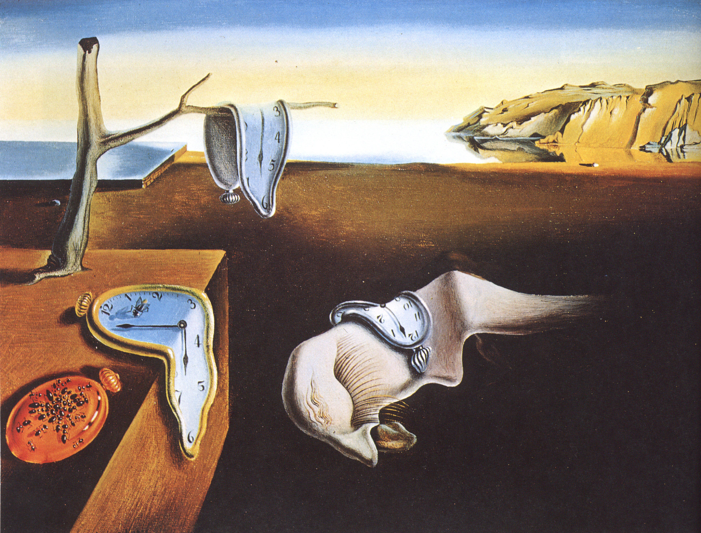

Thông tin tác phẩm
- Họa sĩ Salvador Dalí
- Hoàn thành 1931
- Trường phái Siêu thực (Surrealism)
- Chất liệu Sơn dầu trên canvas
- Quốc gia Tây Ban Nha

“Những chiếc đồng hồ tan chảy
giữa không gian của giấc mơ và thời gian.”
Hình ảnh nổi bật nhất của
“The Persistence of Memory”
là những chiếc đồng hồ mềm oặt
đang chảy dài trên cành cây,
mặt bàn đá và các hình thể kỳ dị giữa không gian vắng lặng.
Salvador Dalí biến thứ vốn tượng trưng
cho sự chính xác và ổn định —
thời gian —
trở nên méo mó,
chậm chạp và mong manh.
Những vật thể quen thuộc
dường như đang mất đi cấu trúc thật của chúng,
khiến toàn bộ khung cảnh
giống một giấc mơ hơn là hiện thực.
Bầu trời tĩnh lặng,
ánh sáng lạnh
và khoảng không rộng lớn
tạo cảm giác cô độc kỳ lạ,
như thể thời gian đang dần tan biến
trước mắt con người.
Chính hình ảnh ấy
đã khiến tác phẩm trở thành
một trong những biểu tượng nổi tiếng nhất
của nghệ thuật siêu thực.